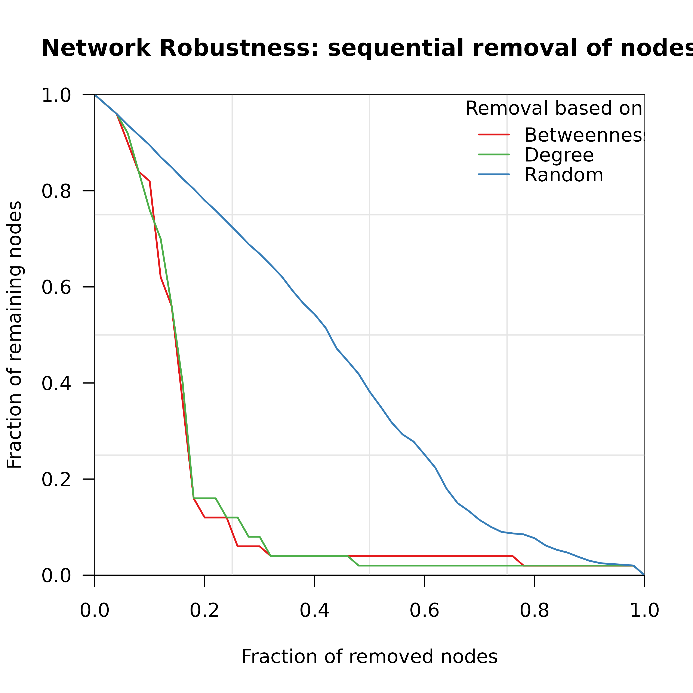
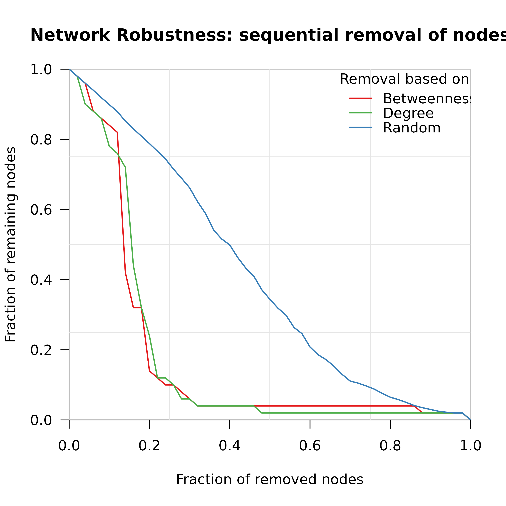

Creates a visualization of network robustness showing the fraction of remaining nodes in the largest connected component during sequential node/edge removal. Supports comparison of multiple attack strategies.
Usage
plot_robustness(
...,
x = NULL,
measures = c("betweenness", "degree", "random"),
colors = NULL,
title = "Network Robustness: sequential removal of nodes",
xlab = "Fraction of removed nodes",
ylab = "Fraction of remaining nodes",
lwd = 1.5,
legend_pos = "topright",
n_iter = 1000,
seed = NULL,
type = "vertex"
)Arguments
- ...
One or more robustness results from
robustness, or named arguments to pass networks for on-the-fly computation.- x
Network for computing robustness on-the-fly.
- measures
Character vector of attack strategies to compare. Default c("betweenness", "degree", "random").
- colors
Named vector of colors. Default: green=Degree, red=Betweenness, blue=Random (matching Nature paper style).
- title
Plot title. Default "Network Robustness: sequential removal of nodes".
- xlab
X-axis label. Default "Fraction of removed nodes".
- ylab
Y-axis label. Default "Fraction of remaining nodes".
- lwd
Line width. Default 1.5.
- legend_pos
Legend position. Default "topright".
- n_iter
Number of iterations for random. Default 1000.
- seed
Random seed. Default NULL.
- type
Removal type. Default "vertex".
Examples
if (requireNamespace("igraph", quietly = TRUE)) {
g <- igraph::sample_pa(50, m = 2, directed = FALSE)
# Quick comparison of all strategies
plot_robustness(x = g, n_iter = 20)
# Or compute separately
rob1 <- robustness(g, measure = "betweenness")
rob2 <- robustness(g, measure = "degree")
rob3 <- robustness(g, measure = "random", n_iter = 20)
plot_robustness(rob1, rob2, rob3)
}

